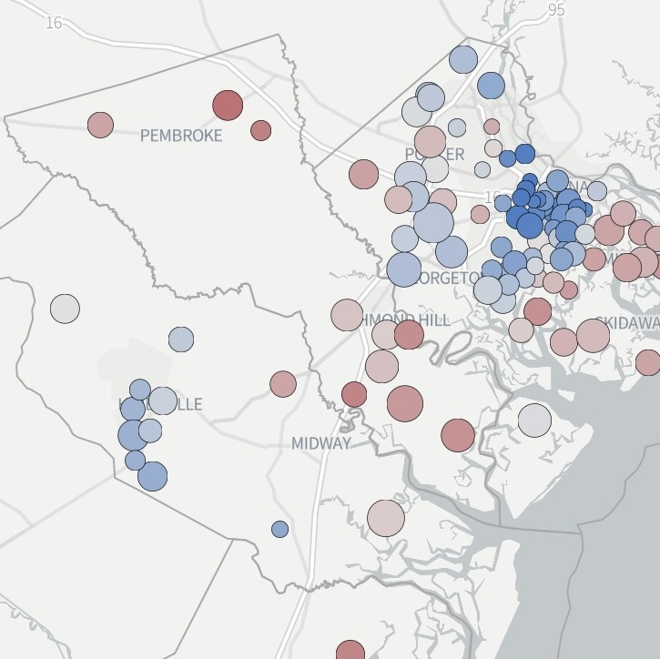

Maggie Lee
Hi, I'm a data reporter who covers state and local governments in Georgia. I started as a print reporter.
Print bylines and some data work in places like
McClatchy's Georgia papers,
Creative Loafing,
SaportaReport,Atlanta Civic Circle
and others.
Now I mainly do data visualizations, web-scraping and web apps. And good robots. For outlets like The Current GA.
Can I help you with something?
maggie.a.lee[ at ]gmail.com
Phone or signal: 404-five three eight-2740

How Coastal Georgia voted

Coastal Georgia's 2024 presidental election results presented by party, geography and scale for The Current GA.
Coastal Georgia votes for president
Ingredients: QGIS, Flourish
Atlanta Airbnb snapshot
Data byline on a couple SaportReport stories for scraping, understanding and mapping Atlanta Airbnb data.
A snapshot of Atlants's Airbnb listings raises questions about regulation and affordability
Northern suburbs' Airbnb data show challenges of short-term rental regulation
Ingredients: Python, scraping, QGIS, Flourish
Latest Georgia campaign money report: Lots of commas

Experiment in visual storytelling in a tight CMS. Basically an icon bar graph with paragraphs between the bars.
Live version at Atlanta Civic Circle
Ingredients: Flourish, no-code chart, grouped symbol bar chart
Georgia legislators above average
Georgia lawmakers are above average in age and wealth. Brings together several data sources and experiments with telling the story as a quiz.
Live version at Atlanta Civic Circle
Ingredients: Python, scraping, data-cleaning, Flourish
Where Georgians live together and apart
Demographic dot-density map
Live version at Atlanta Civic Circle
Unframed version
Ingredients: Mapbox, QGIS
How to gerrymander
Graphics that explain "packing," "cracking" and other ways to manipulate district maps for political gain. Atlanta Civic Circle used these panels in social media.
Live version at Atlanta Civic Circle
Unframed version on Floursih
Ingredients: Photoshop, Flourish, no-coding
Know your state lawmakers 2021

Social media and contact info for state lawmakers. Click on a district to find yours.
Live version at SaportaReport.com
Code on Github
Ingredients: Leaflet, map, HTML
2020 crime in Buckhead versus the rest of Atlanta

You need a chart to tell a story that has lots of numbers, like crime stats. That's doable in fairly little time with very little coding via Datawrapper, Flourish and other software. Great for any size publication.
Live version at Reporter Newspapers
Ingredients: No-coding or low-coding charts and graphs, Flourish
Georgia election results (map)

Map of election results and number of voters by county
Live version at SaportaReport.com
Ingredients: Datawrapper, csv
Atlanta and Georgia politics Twitter bot

@GaPolBot monitors public Georgia and Atlanta public agency websites and RSS feeds and tweets what it finds.
Like, the governor's executive orders, Supreme Court of Georgia opinions and when new companies register to lobby in Georgia.
Ingredients: Python, Twitter, bot, Tweepy
Commercial property tax discounts in Atlanta

Map and list tracking where Atlanta's and Fulton's economic development agencies have authorized commercial property tax breaks, starting in 2019. Goes with ongoing reporting at SaportaReport.com.
Live version
Code on GitHub
Ingredients: Leaflet, Flask, Python, static page
If Georgia's budget were $1

If Georgia's budget were $1, health care and education would get quarters. Most other things would get pennies
With story at SaportaReport.com
Unframed version
Developed with Observable
Ingredients: D3.js, Excel
Georgians squeeze into metro Atlanta. Here's how much:

A personal project, just trying out a county map with the counties sized by 2016 population.
Interactive version
Code on GitHub
Ingredients: Cartogram, cartoram.js, D3.js, HTML, CSS
Georgia lawmakers wrote ~4,800 things, mostly honors

Another personal project, from 2016. I wanted to show what gets filed and handled in the Georgia Legislature. I wrote a little Python script to scrape, then categorize, these bills. D3.js did the heavy lifting on drawing the chart. It's finished and annotated in Photoshop.
Chart as png
Code on GitHub
Ingredients: Python, web scraping, D3.js, Photoshop
About 26,000 refugees moved to Georgia in 10 years. Here's where most came from and went to in metro Atlanta

A chart created for the AJC in 2016, though that page has succumbed to link rot :(
Unframed version
Code on GitHub
Ingredients: D3.js, JavaScript, HTML, CSS, CSV
Miscellaneous
Excel is for reporters, not just accountants
Eight newsroom hacks that don't require coding
How to schedule a Python script in a piece of cloud, using an Amazon AWS EC2 instance (a tiny virtual server) and cron (a scheduler that is built into it.)